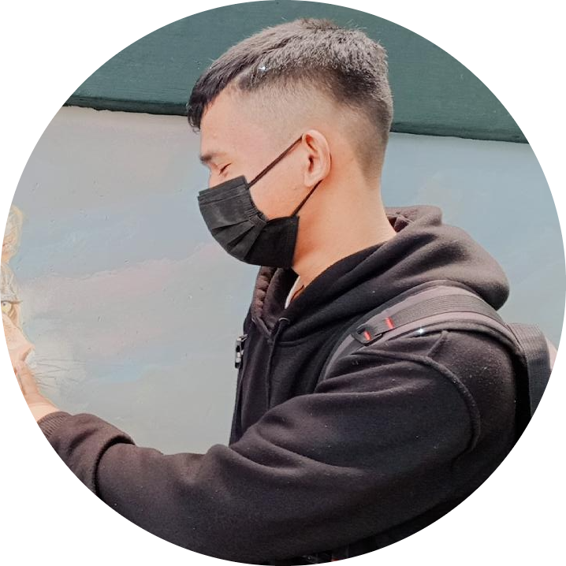

My Name is
Clinton Christovel Simanullang
Saya merupakan mahasiswa Universitas Sumatera Utara semester 4 jurusan Teknologi Informasi. Dalam menjalani masa perkuliahan saya tertarik dibidang backend developer dan Artificial Intelligence.
